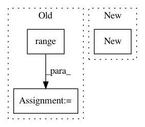

e503f50cb38fb1864fb6d66ba927b0852159428d,gpytorch/utils/interpolation.py,Interpolation,interpolate,#Interpolation#Any#Any#,34
Before Change
C[left_boundary_pts[i], closest_from_first[i]] = 1
lower_grid_pt_idxs[left_boundary_pts[i]] = 0
right_boundary_pts = torch.LongTensor([i for i in range(len(lower_grid_pt_idxs))
if (lower_grid_pt_idxs > num_grid_points - num_coefficients)[i] == 1])
num_right = len(right_boundary_pts)
if num_right > 0:
After Change
C[right_boundary_pts[i], closest_from_last[i]] = 1
lower_grid_pt_idxs[right_boundary_pts[i]] = num_grid_points - num_coefficients
J = x_grid.new(num_target_points, num_coefficients).zero_()
for i in range(num_coefficients):
J[:, i] = lower_grid_pt_idxs + i
In pattern: SUPERPATTERN
Frequency: 3
Non-data size: 3
Instances
Project Name: cornellius-gp/gpytorch
Commit Name: e503f50cb38fb1864fb6d66ba927b0852159428d
Time: 2017-09-22
Author: gpleiss@gmail.com
File Name: gpytorch/utils/interpolation.py
Class Name: Interpolation
Method Name: interpolate
Project Name: Kaixhin/Rainbow
Commit Name: d5a60e49538e4f61fd46468895fa42df2a429d95
Time: 2017-11-11
Author: design@kaixhin.com
File Name: agent.py
Class Name: Agent
Method Name: learn
Project Name: cornellius-gp/gpytorch
Commit Name: 531bc80bae88a5f240583bc19de9fc4f65e675a5
Time: 2017-08-01
Author: jrg365@cornell.edu
File Name: gpytorch/math/functions/interpolated_toeplitz_gp_marginal_log_likelihood.py
Class Name: InterpolatedToeplitzGPMarginalLogLikelihood
Method Name: backward